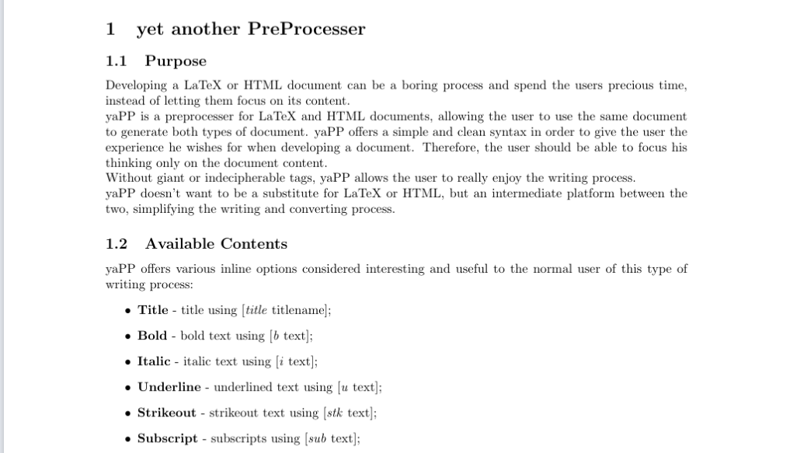
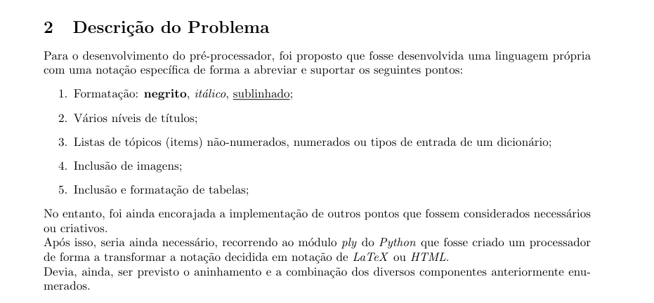

Introdução
O presente relatório é relativo à realização do primeiro trabalho prático da UC de Processamento de Linguagens na Universidade do Minho e consequente implementação de uma aplicação designada por yaPP (Yet Another PreProcessor).
O desenvolvimento deste trabalho prático teve como principais objetivos os seguintes pontos:
-
Aumentar a experiência de uso do ambiente Linux e de algumas ferramentas de apoio à programação;
-
Aumentar a capacidade de escrever Expressões Regulares (ER) para descrição de padrões em streams de texto;
-
Desenvolver, a partir de Expressões Regulares, sistemática e automaticamente, Processadores de Linguagens Regulares, que encontrem ou transformem textos com base no conceito de regras de produção Condição-Ação;
-
Utilizar o Python e os seus módulos re e ply para gerar os filtros de texto;
Tendo isto em conta, o grupo decidiu optar pela escolha do segundo tema proposto para a realização do trabalho prático, ou seja, pelo desenvolvimento de um pré-processador para
LaTeX ou
HTML, pois, foi considerado que este seria o tema que traria mais benefício de ser explorado e uma possível grande utilidade no nosso quotidiano.
É, no entanto, imperativa a perceção de aquilo que é um pré-processador, para uma consequente boa aplicação dos seus conceitos. Desta forma, podemos afirmar que um pré-processador permite que através de notações mais leves e simples (de preferência independentes do tipo de documento final) para que, posteriormente, se recorra ao pré-processamento para substituir a notação ligeira, abreviada, pelas marcas finais corretas. Como exemplos de pré-processadores podemos considerar o
PPP, desenvolvido por José Carlos Ramalho, ou a mais atual e bem conhecida linguagem
MarkDown para a construção de páginas
HTML.
Para o desenvolvimento do yaPP, foi utilizada linguagem de programação
Python e recorreu-se aos seus módulos
re e
ply de forma a gerar os filtros de texto adequados a partir das Expressões Regulares que encontrassem.
Visto que um dos objetivos de um pré-processador é permitir que um mesmo ficheiro possa ser pré-processado para diversas linguagens, foi ainda decidido, que seria dada prioridade ao desenvolvimento de um pré-processador focado em
HTML, no entanto, deveria ainda ser capaz de efetuar o pré-processamento para
LaTeX se assim o utilizador pretendesse.
Descrição do Problema
Para o desenvolvimento do pré-processador, foi proposto que fosse desenvolvida uma linguagem própria com uma notação específica de forma a abreviar e suportar os seguintes pontos:
-
Formatação: negrito, itálico, sublinhado;
-
Vários níveis de títulos;
-
Listas de tópicos (items) não-numerados, numerados ou tipos de entrada de um dicionário;
-
Inclusão de imagens;
-
Inclusão e formatação de tabelas;
No entanto, foi ainda encorajada a implementação de outros pontos que fossem considerados necessários ou criativos.
Após isso, seria ainda necessário, recorrendo ao módulo
ply do
Python que fosse criado um processador de forma a transformar a notação decidida em notação de
LaTeX ou
HTML.
Devia, ainda, ser previsto o aninhamento e a combinação dos diversos componentes anteriormente enumerados.
Solução Desenvolvida
Tendo em conta os diversos requisitos e as diversas utilidades que um pré-processador deve apresentar, foram implementadas todas as funcionalidades obrigatórias e ainda outras consideradas úteis por parte do grupo de desenvolvimento. Assim, temos que foram implementadas as seguintes funcionalidades:
Funcionalidades inline
Consideramos funcionalidades
inline aquelas que se tratam de funcionalidades de uma linha, ao invés de grandes blocos.
A este nível foram implementadas as seguintes funcionalidades:
-
Título - é possível indicar o título do documento utilizando [t título];
-
Negritos - é possível tornar texto negrito utilizando [b texto];
-
Itálicos - é possível tornar texto itálico utilizando [i texto];
-
Sublinhados - é possível tornar texto sublinhado utilizando [u texto];
-
Imagens - é possível colocar imagess utilizando [img srclink [name nome] [w largura] [h altura]] (para LaTeX, os campos w e h não são aplicáveis);
Além destas, consideradas obrigatórias, foram ainda implementadas as seguintes por serem consideradas úteis por parte do grupo de desenvolvimento:
-
Riscado - texto riscado utilizando [stk texto];
-
Subscrito - texto subscrito utilizando [sub texto];
-
Sobrescrito - texto sobrescrito utilizando [sup texto];
-
Código Inline - código inline utilizando [c código];
-
Hyperlinks - hyperlinks utilizando [href link [name nome]];
-
Caracteres Especiais - caracteres especiais (como letras gregas) utilizando [sp nome do caractere] (para LaTeX, apenas letras gregas);
-
Comentários - comentários utilizando //;
-
Newlines - newlines utilizando duas vezes \n;
-
Caracteres Escaped - para utilizar [ ou ], é necessário inserir \ antes do caractere desejado;
Funcionalidades em blocos
A este nível, foram implementadas as seguintes funcionalidades:
-
Secções
-
Secções e vários níveis de títulos com:
-
[sec título
-
texto da secção
-
para terminar o bloco utiliza-se:
-
sec]
-
Listas não-numeradas
-
Listas não-numeradas utilizando:
-
[list
-
[item conteúdo do item]
-
para terminar a lista utiliza-se:
-
list]
-
Listas ordenadas
-
Listas ordenadas por caracteres ou números utilizando:
-
[ordlist (1 ou a ou A)
-
[item conteúdo do item]
-
para terminar a lista utiliza-se:
-
ordlist]
-
Listas dicionário
-
Listas dicionário utilizando:
-
[dsclist
-
[obj nome do item]
-
[dsc primeira descrição]
-
[dsc segunda descrição]
-
para terminar a lista utiliza-se:
-
dsclist]
-
Tabelas
-
Tabelas utilizando:
-
[table número de colunas
-
[row [h A][h B]]
-
[row [e a][e b]]
-
para terminar a tabela utiliza-se:
-
table]
Além destas, consideradas obrigatórias, foram ainda implementadas as seguintes por serem consideradas úteis por parte do grupo de desenvolvimento:
-
Blocos de Código
-
Blocos de código utilizando:
-
[code code linguagem
-
código
-
para terminar o bloco utiliza-se:
-
code]
-
Raw Block
-
Blocos de código raw (permite escrever LaTeX ou HTML diretamente) utilizando:
-
[raw
-
código
-
para terminar o bloco utiliza-se:
-
raw]
-
Tabelas com bordas
-
Tabelas com bordas utilizando:
-
[btable número de colunas
-
[row [h A][h B]]
-
[row [e a][e b]]
-
para terminar a tabela utiliza-se:
-
table]
-
Esta tabela só se diferencia da sem bordas em HTML.
Além destas, consideramos ainda importante destacar que a aplicação é capaz de efetuar o pré-processamento tanto para
HTML como para
LaTeX de forma a permitir que um único documento seja capaz de gerar um documento
LaTeX e outro
HTML.
Implementação
Tokens e Start Conditions
Para ser possível a gestão das várias funcionalidades implementadas, foram criados vários
tokens:
-
BOLD;
-
ITALIC;
-
UNDERLINE;
-
CINLINE;
-
SUBSCRIPT;
-
SUPERSCRIPT;
-
STRIKEOUT;
-
HREF;
-
CODE;
-
Entre outros...
Para além disso, pela mesma razão, foram também colocadas várias
start conditions que podem ser
inclusive ou . Diferenciam-se pelo facto de que as exclusivas não prevêem aninhamento entre estados. Alguns exemplos são:
-
('section', 'inclusive');
-
('list', 'exclusive');
-
('item', 'inclusive');
-
('superscript', 'inclusive');
-
('strikeout', 'inclusive');
-
Entre outros...
Estas
conditions funcionam sob a forma de uma
stack, a partir da qual é possível gerir o facto de podermos ter estados dentro de outros estados e, por isso, permitir, por exemplo, negritos dentro de itálicos e conter subsecções dentro de secções.
Expressões Regulares
Através de expressões regulares, podemos associar a sintaxe prevista aos
tokens que achamos necessários. Desta forma, é possível, junto com as
start conditions, detetar qual será o
output correspondente ao
input do utilizador.
Um exemplo é a gestão das secções. Esta utiliza uma variável auxiliar que permite sabermos se a secção corresponde na verdade a uma subsecção. Para além disso, o título da secção é capturado como texto normal, uma vez que a
start condition é inclusiva.
def t_SECTION(t):
r'\[sec\ '
t.lexer.header_num += 1
t.value = "\n\\"
for x in range(1, t.lexer.header_num):
t.value += "sub"
t.value += "section{"
t.lexer.push_state('section')
t.lexer.push_state('sectiontitle')
return t
def t_sectiontitle_END(t):
r'\n\s*'
t.value = "}\n"
t.lexer.pop_state()
return t
def t_section_END(t):
r'\s*sec\]\n?'
t.lexer.pop_state()
t.lexer.header_num -= 1
Controlador
De forma a conseguirmos gerir a conversão para html ou latex de acordo com a vontade do utilizador, foi necessário implementar um controlador que redirecionasse para as funções correspondentes.
Testes Efetuados
De forma a comprovarmos a viabilidade e utilidade da aplicação desenvolvida, foram escritos diversos documentos de forma a verificar os diversos aspetos da nossa aplicação.
Manual da Aplicação
De forma a facilitar a utilização deste pré-processador, foi escrito um manual de utilização na linguagem desenvolvida. Por conveniência, serviu ainda como um teste ao fazermos a conversão para html e latex.

Apontamentos
Para além disso, verificamos que também é possível escrever apontamentos de forma legível e elegante, com recurso à funcionalidade extra que adicionamos, os code blocks.
Relatório de Desenvolvimento do presente Trabalho
Como o teste mais relevante, foi decidido escrever o relatório de desenvolvimento do projeto na linguagem desenvolvida, de forma a detetar possíveis falhas.

Conclusões e Trabalho Futuro
Consideramos que o desenvolvimento da aplicação se revela um grande sucesso, tendo o grupo de desenvolvimento sido capaz de implementar as funcionalidades requeridas e outras consideradas interessantes e úteis para uma aplicação deste género.
Assim, podemos concluir que a utilização de Expressões Regulares permite o desenvolvimento de aplicações muito poderosas, sendo, neste caso, suportadas pelos módulos re e ply do Python.
Tal como é normal na indústria do software, um programa tem tendência a continuar em desenvolvimento ao longo da sua vida e, assim sendo, consideramos ainda que no futuro esta aplicação poderia ainda almejar à implementação de mais e novas funcionalidades, bem como, do desenvolvimento de highlighters de forma a facilitar a escrita dos documentos .ya.
Bibliografia
-
Documentação do ply. Consultado pela última vez a 27 de março de 2022.
-
W3Schools. Consultado pela última vez a 27 de março de 2022.
-
Overleaf. Consultado pela última vez a 27 de março de 2022.
-
Documentação do Python. Consultado pela última vez a 27 de março de 2022.
-
José Carlos Ramalho. PPP - Ptext PreProcessor. Consultado pela última vez a 27 de março de 2022.